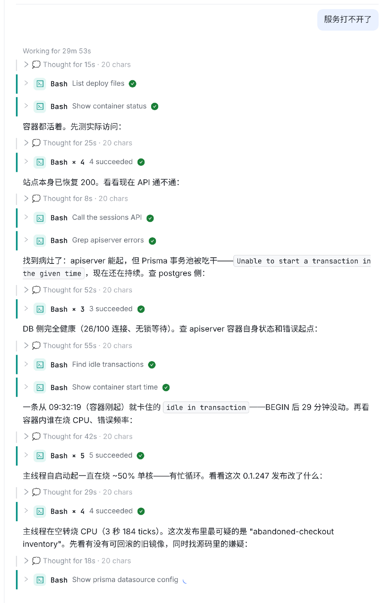
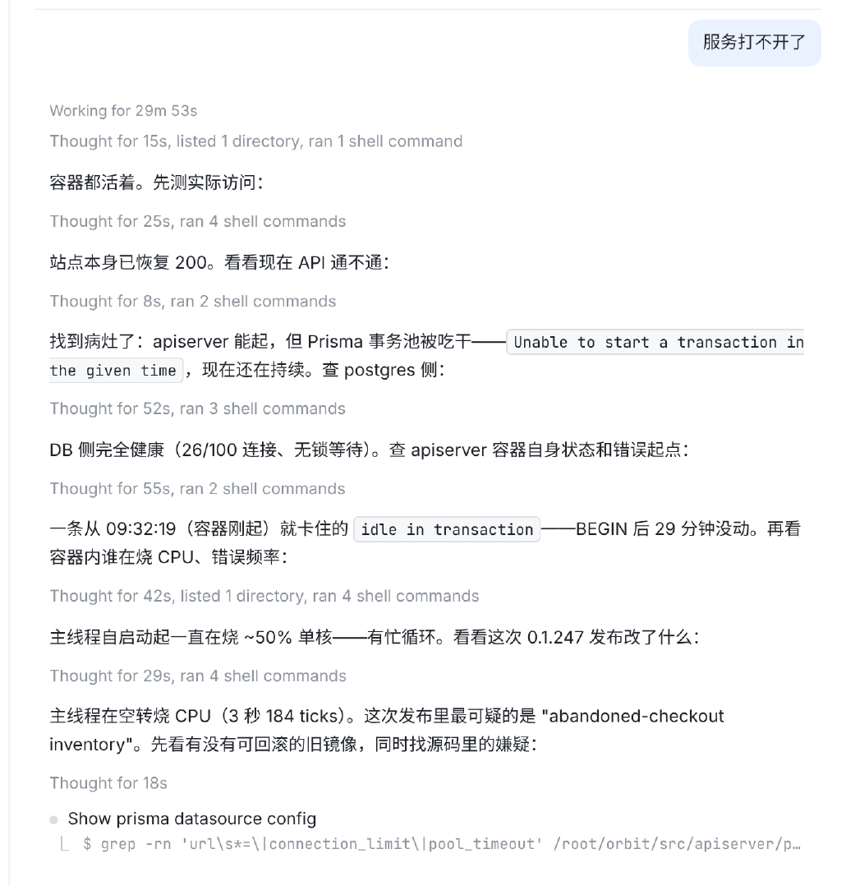
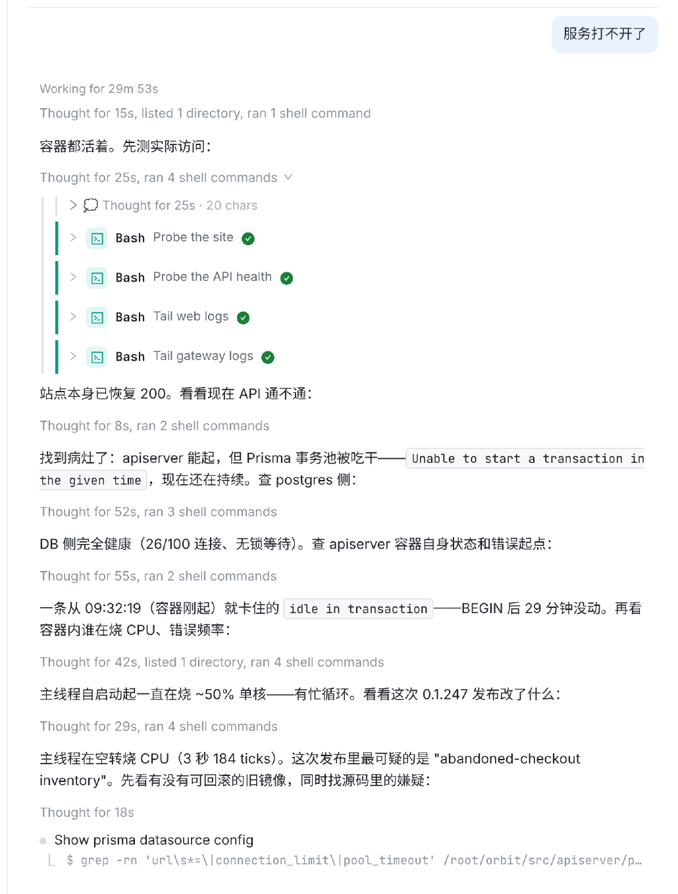
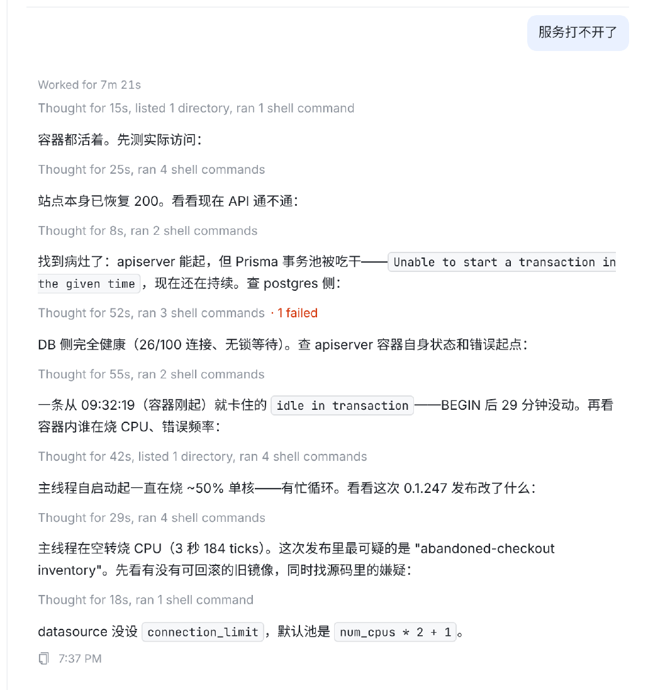
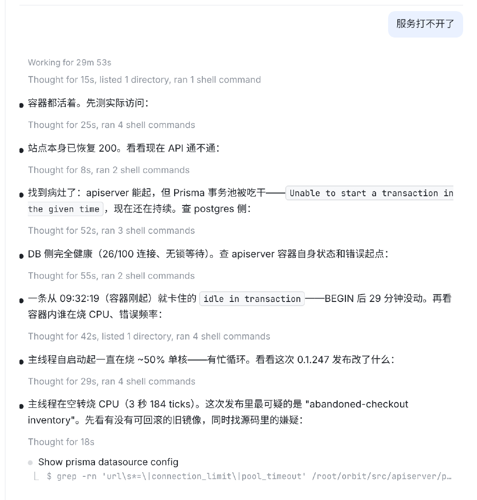
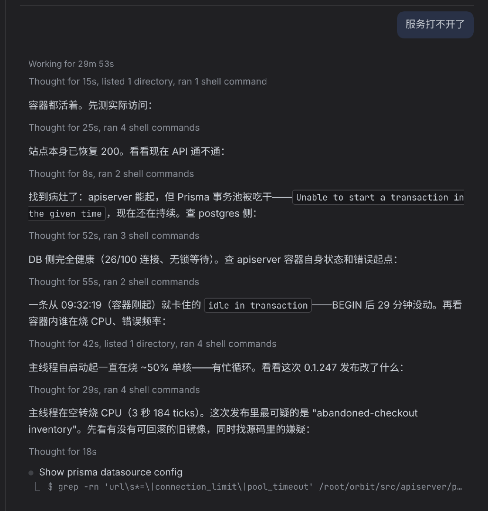

思考一行、每条命令一张卡；3 条以上才合成 “Bash × 4”。7 轮排查要 ~1060px 高，结论文字被卡片挤散。

两段回复之间的思考+工具调用合成一行灰字，无卡片无图标。正在跑的那条单独显示：● 描述 + ⎿ 命令（同截图）。高度 ~720px（−32%）。

悬停出现 ⌄；点击展开为今天的原样卡片（思考、每条命令、输出都在），左侧竖线收拢。再点收起。

失败不自动展开，行尾红字 “· 1 failed”。回合结束后最后一条命令也并回步骤行；回复下的 ⧉ · 时间保持不变。

和截图完全一致：每段回复前一个实心点，步骤行与回复文字对齐。区分“说的话”和“做的事”更强，但 Markdown 长回复（列表、表格）里也会多一个点。

颜色全部沿用现有变量（--text-3、--border），无新色值。

| 情况 | 步骤行写法 |
|---|---|
| 思考 | Thought for 15s（多段相加），总在最前 |
| Bash | ran 2 shell commands；ls/find/tree 开头算 listed 1 directory |
| Read / Grep·Glob / Edit / Write | read 3 files / searched 2 times / edited 1 file / wrote 1 file |
| WebFetch / WebSearch / 其他 MCP | fetched 1 page / searched the web 1 time / used 2 tools |
| 有失败 | 行尾 · 1 failed（红），不自动展开 |
| 进行中 | 已完成部分成行；当前那条单独 ● 描述 + ⎿ 命令，结束后并入 |
| 不并入（保持原卡片） | 提问、计划、子 Agent/Workflow、建任务/会话卡、带图片的结果、用户的 ! 命令（与今天的分组例外相同） |
| 导出 / ⌘F | 导出时全部展开；⌘F 命中折叠内容时自动展开该行 |
src/web/src/components/Transcript.tsx：groupToolRuns 改为“思考+可分组工具”任意条数成组；新 StepsLine 取代 ToolGroupView 的折叠行src/web/src/index.css：.chat-steps* 约 15 行Transcript.thinking / turnEnd / streamingOrder 等按新结构更新，新增步骤行文案测试